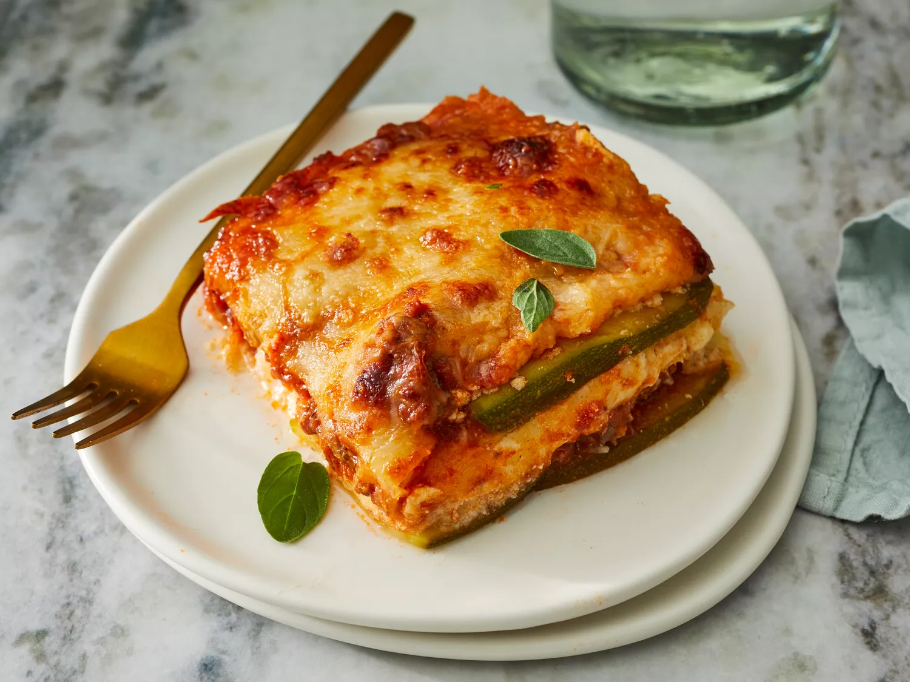

Zucchini

Description
This lasagna is made with zucchini slices instead of pasta. This low-carb, gluten-
free beef lasagna is delicious and satisfying; it's a crowd-pleaser!
Ingredients
- 1 1⁄2 large zucchinis, thinly sliced lengthwise
- 1 tablespoon olive oil
- 1 pound ground beef
- 1 1⁄2 cups low-carb marin
- 2 teaspoons salt, divided
- 1 teaspoon dried oregano
- 1⁄2 teaspoon ground black pepper
- 1 (8 ounce) container ricotta cheese
- 1 large egg
- teaspoon ground nutmeg
- 2 cups shredded mozzarella cheese
- 1⁄4 cup grated Parmesan cheese
- aluminum foil
- Step 1
Preheat the oven to 375 degrees F (190 degrees C). Grease an 8-inch square
baking dish with cooking spray
- Step 2
Pat dry zucchini slices with a paper towel to remove excess moisture. Set aside.
- Step 3
Heat olive oil in a saucepan over medium-high heat. Add ground beef; cook until
browned, 5 to 8 minutes.
- Step 4
Add marinara sauce, 1 teaspoon salt, oregano, and pepper; simmer for 10
minutes. Set aside
- Step 5
Combine ricotta cheese, egg, 1 teaspoon salt, and nutmeg in a bowl; mix well.
Set aside.
- Step 6
Arrange one layer of zucchini slices in the prepared baking dish. Cover with 1/2
of the sauce. Add another layer of zucchini slices. Spread ricotta mixture on top.
Sprinkle with 1/2 of the mozzarella cheese. Add another layer of zucchini slices;
cover with remaining sauce and top with remaining mozzarella cheese and
Parmesan cheese. Cover the baking dish with aluminum foil
- Step 7
Bake in the preheated oven for 30 minutes. Remove aluminum foil and bake
until top is golden, about 15 minutes more.